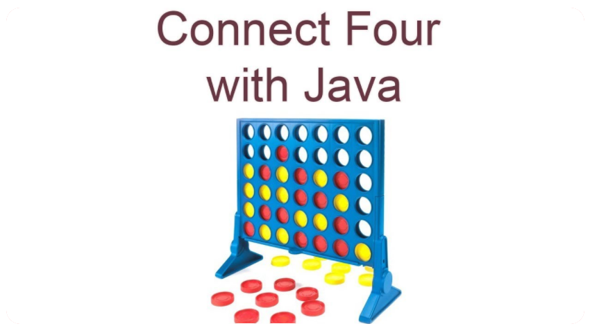

-
What is Connet 4
Connect Four is a two-player connection board game, in which the players choose a colour and then take turns dropping coloured discs into a seven-column, six-row vertically suspended grid. The pieces fall straight down, occupying the lowest available space within the column. The objective of the game is to be the first to form a horizontal, vertical, or diagonal line of four of one's own discs. Connect Four is a solved game. The first player can always win by playing the right moves. The game was first sold under the Connect Four trademark by Milton Bradley in February 1974. We are making two iterations of this game one for PC in which we will use Java programming language and fxml for the front end and the second iteration will be for Android devices and will also use Java with android repository and xml for the front end. The game will have 2 modes single player against computer and two player multiplayer mode. In two player multiplayer mode the players will compete against each other, and they can set their custom names too and in the single player the player will compete against the computer which will be using Artificial Intelligence (Mini-max Algorithm). The game will end when one player connects 4 pieces on the grid the game will give a pop out message congratulating the player.
By Pranshu Bhushan, Vishnu Singh, Sayan Chaterjee and Aniket Sharma
